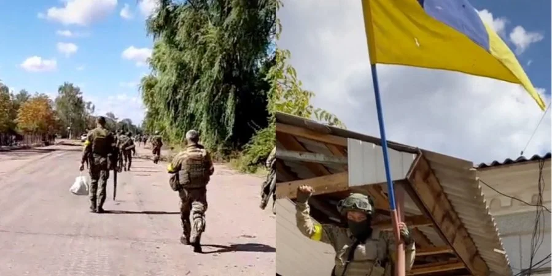

Контрнаступ у Херсонській області. Перед якими труднощами постали українські бійці, відтісняючи росіян — WP
Після оголошеного контрнаступу на півдні України інформації про перебіг бойових дій на цьому напрямку з’являлося мало. Виданню Washington Post вдалося поспілкуватися з дев’ятьма пораненими на Херсонщині українськими солдатами.
Видання зазначає, що, за словами українських солдатів, їм не вистачає артилерії, щоб вибити росіян, які окопалися.
«Вони використовували проти нас все. Хто може витримати таку атаку протягом п’яти годин? — сказав Денис, 33-річний український солдат, підрозділ якого відступив від села, яке утримували росіяни, після тривалого обстрілу касетними бомбами, фосфорними боєприпасами та мінометами.
«Ми втратили п’ятьох людей на кожного з тих, що втратили вони», — сказав Ігор, 30-річний командир взводу, який пошкодив спину, коли танк, в якому він їхав, врізався в кювет.
За словами українських військових, їхні позиції розкривали російські безпілотники Орлан з висоти понад кілометр, з якої їх не чути.
Українські бійці також розповіли, що російські танки виїжджали з нещодавно збудованих цементних укріплень, щоб обстріляти піхоту з великокаліберної артилерії, а потім ховалися під бетонними укриттями, захищеними від мінометного та ракетного вогню.
Коротко про причини провалу русні:
- Їхня армія гівно, як і вся їхня країна
- Вони трусливі, тому, що сваїх нє брасаєм
- Вони бухають на фронті
- Їм постійно брешуть їх командири
- ЗСУ найкращі
- За нами правда
- Ми обов'язково переможемо
- Слава Україні